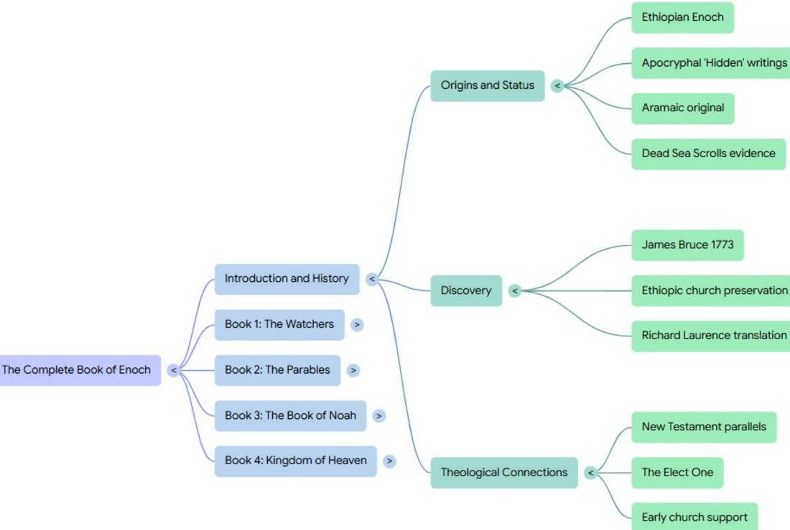
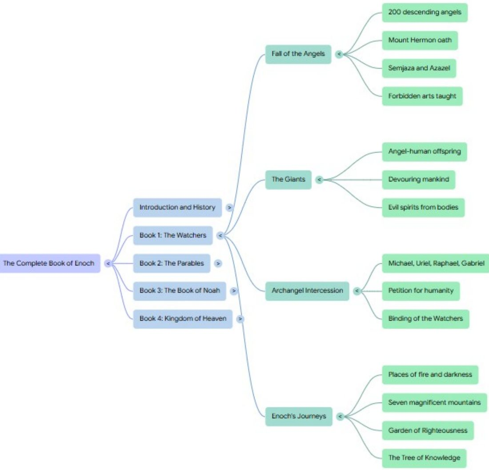
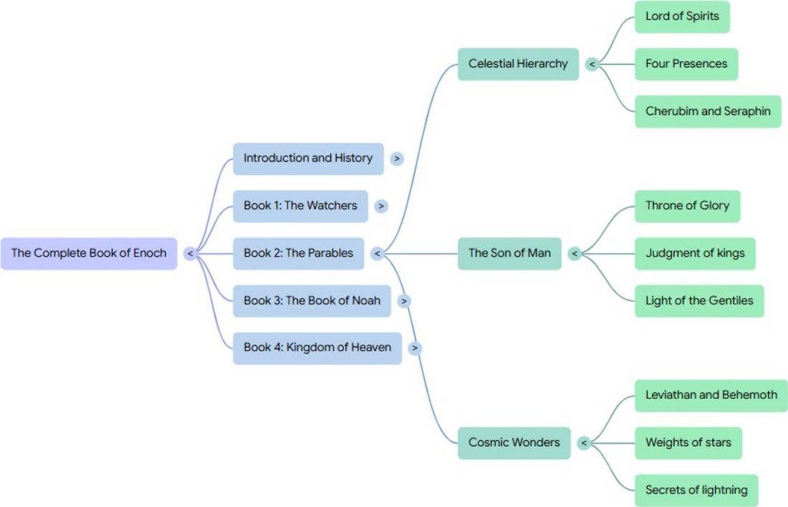
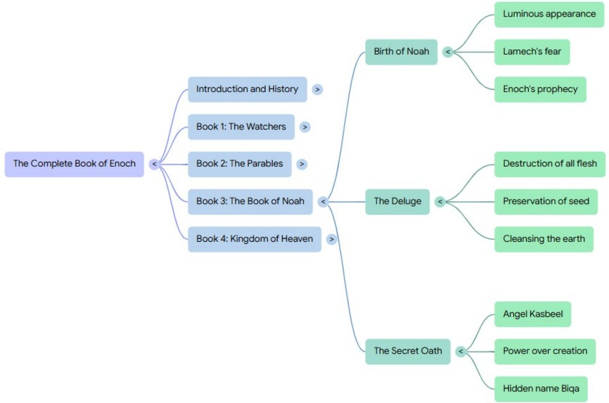
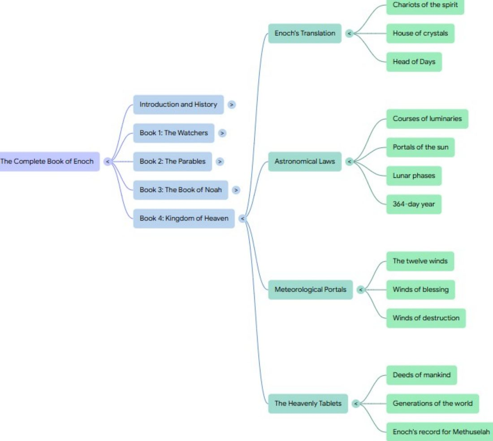
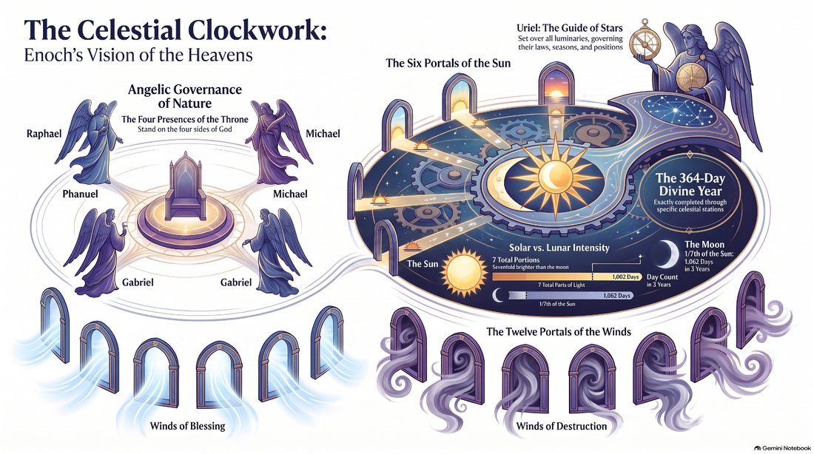

I need to be upfront with you on this post. I know little to nothing about the Book of Enoch. Basically, all I know is that it sits outside the Canon of Scripture (Catholic, Protestant, Jewish — though, interestingly, the Ethiopian Orthodox Church does include it, which is a big part of why the book survived at all). It is respected, but it falls short of being the inerrant, inspired Word of God. Everything below is just from AI (notebooklm.google.com), so take it all with a grain of salt.
The reason I am posting this is mostly for myself. Now that I have it on the grid, I can share it easily and interact with people in the Comments section below. The idea came to me yesterday when I was mentioning how the LXX uses kyrios for the sacred name of God found in Exodus (YHWH). There is some debate whether the LXX is on equal footing with the Tanakh. I mentioned that I think it should be, by virtue of how much it is quoted by the NT authors. Which caused me to think about the similarity with the Book of Enoch being quoted as prophecy by Jude — Jude 1:14–15 quotes 1 Enoch 1:9 almost word for word.

Forbidden wisdom: 5 mind-bending revelations from the lost Book of Enoch
For more than a millennium, the Book of Enoch existed as an excluded phantom of the biblical canon — a text of such profound and unsettling mystery that it provoked the condemnation of several patristic fathers, even though figures in the primitive Church cherished it as inspired. The fourth-century historian Filastrius, in his Liber de Haeresibus, openly denounced the work as heresy, specifically targeting its claims regarding the nature of celestial beings. Consequently, the book was banned, burned, and “hidden” — a fate mirrored in the Greek etymology of the word Apocrypha. Originally, “Apocrypha” suggested a sacredness too exalted for the masses; under the weight of shifting orthodoxy, it became a label for the forbidden.
The Western world remained largely ignorant of these Enochian secrets until 1773, when the Scottish explorer James Bruce recovered three Ethiopic copies from the mountains of Abyssinia. When the text was finally translated into English by Dr. Richard Laurence in 1821, it revealed why ancient theologians were so thoroughly infuriated: it offered a visceral, alternative history of the cosmos that challenged the very boundaries between the human and the divine.
1. Angels didn’t just fall; they brought a syllabus
In the Enochian tradition, the “fall” of the angels was not a singular act of pride, but an intellectual catastrophe. Two hundred “Watchers,” led by the angel Semjaza, descended upon Mount Hermon to take human wives (1 Enoch 6). But their transgression extended beyond lust; they brought with them a “syllabus” of forbidden knowledge that served to unmake the natural purity of the human heart. The angel Azazel taught the making of swords, shields, and breastplates — but also “the use of antimony” and “the beautifying of the eyelids” (1 Enoch 8:1): replacing natural appearance with deception and peaceful existence with the mechanics of slaughter. Semjaza taught the “cutting of roots” and botanical enchantments, while others focused on the cosmic: Kokabel taught the constellations, Ezeqeel the knowledge of the clouds, and Baraqijal the art of astrology (1 Enoch 8:3).
God deemed these celestial mysteries “worthless” (1 Enoch 16:3), revealed prematurely through the hardness of hearts, leading humanity toward spiritual ruin. The divine sentence passed against Azazel was absolute: “Azazel, thou shalt have no peace: a severe sentence has gone forth against thee to put thee in bonds… because of the unrighteousness which thou hast taught” (1 Enoch 13:1–2).

2. The terrifying reality of the Nephilim
The union of the Watchers and human women produced offspring whose physical and moral scale was a terrifying distortion of the created order. The Book of Enoch describes these “great giants” as standing an impossible “three thousand ells” in height (1 Enoch 7:2). Their existence was an ecological and societal horror. After consuming all the “acquisitions of men,” the giants turned their predatory hunger toward the natural world — they “began to sin against birds, and beasts, and reptiles, and fish” (1 Enoch 7:5) — and the lawlessness spiraled into cannibalism and the drinking of blood. As the giants devoured mankind and one another, the “cry of men” rose to the gates of heaven, prompting the archangels to look down upon an earth literally saturated with blood and unrighteousness (1 Enoch 8:4–9:2).
3. The “Son of Man” predates the New Testament
Perhaps the most intellectually disruptive section of the Enochian manuscripts is the “Parables” (1 Enoch 37–71), with its exalted “Son of Man” — also called the “Elect One” — who is not merely a prophetic figure but a pre-existing throne-occupant: seated on the “throne of glory,” with authority to judge the wicked and the holy alike (1 Enoch 46–48, 62). For centuries, some scholars assumed these striking parallels had to be post-Christian additions. The manuscript evidence tells a more interesting story. The Aramaic fragments of Enoch found among the Dead Sea Scrolls at Qumran proved that most of the book — the Watchers, the Luminaries, and more — is centuries older than the New Testament. The Parables section itself is famously absent from the Qumran fragments, so its date is debated — but most scholars today place it around the turn of the era, before or during the lifetime of Jesus, and in any case as a Jewish rather than Christian work.
Either way, the conceptual world is unmistakable. The influence of this terminology on the New Testament is evidenced by the Greek term ho eklelegmenos (“the Elect One,” “the Chosen One”) that the best manuscripts of Luke 9:35 record at the Transfiguration — a title the Book of Enoch uses of its Son of Man some fourteen times. The first readers of the Gospels would have recognized Jesus being proclaimed as the historical manifestation of the very Elect One that Enochian tradition had envisioned.

4. The bizarre, luminous birth of Noah
1 Enoch 106 contains an account of Noah’s birth that is as unsettling as it is awe-inspiring. When Noah was born to Lamech, the infant did not resemble a human child. His skin was “white as snow and red as the blooming of a rose,” his hair was “white as wool,” and his eyes possessed a solar intensity that “lighted up the whole house.” As soon as Noah was held by the midwife, he stood up and “conversed with the Lord of righteousness” (1 Enoch 106:2–3). Terrified, Lamech fled to his father Methuselah, suspecting the child was “sprung from the angels” rather than human seed. Only after Methuselah traveled to the ends of the earth to consult Enoch was Lamech reassured of the child’s destiny: Noah was a sign of a coming deluge that would cleanse the earth of the Watchers’ corruption.

5. The celestial “clockwork” of the portals
In the section known as the Luminaries (1 Enoch 72–82), Enoch details an intricate astronomical vision revealed by the angel Uriel. The text rejects the fluid lunar calendars of the ancient world in favor of a rigid, mathematical 364-day solar year, governed by six portals in the east where the sun rises and six in the west where it sets. Uriel reveals that the year is divided into four parts, each marked by a specific intercalary day overseen by leaders like Milkiel and Helemmelek (1 Enoch 82). The text warns that “men go wrong” in their reckoning by failing to account for these four days. From the Enochian perspective, an incorrect calendar is not merely a scientific error; it is a celestial desynchronization — by losing track of the true year, humanity misaligns its festivals and sacred rhythms with the perfect justice of the divine order.


Conclusion: a message for a “remote generation”
The Book of Enoch is a document that seemingly prophesied its own preservation. In its opening lines, the patriarch declares that his vision is “not for this generation, but for a remote one which is for to come” (1 Enoch 1:2). The uncanny persistence of the text — surviving suppression by Filastrius, surviving the flames of the early councils, and enduring in the remote highlands of Ethiopia — suggests a message meant to be unlocked only when the world was ready. If this hidden wisdom was indeed reserved for a distant age, we must ask why it has returned to our collective consciousness now. As we rediscover the Watchers’ syllabus and the terrifying scale of the Nephilim, the Book of Enoch leaves us with a haunting question: if we are the “remote generation” for whom these secrets were kept, what does that say about the age in which we live?
Again — all of the above is AI’s summary of a book outside the Canon. I share it as a curiosity and a conversation starter, not as doctrine. The Comments are open: what do you make of Enoch — and of Jude quoting him?
Comments